Background
The web prototype was designed for a website called Clean Up Australia Limited, an Australian charity and non-profit organization, to support and promote their cause, and to provide the public with a way to register and support the charity.
In Assessment 5, I focused on three website pages, namely the homepage, login page and donation page.
Target User
The Charity Aid Foundation (2018) report indicated that women and the elderly are most likely to participate in charity and related activities. Thence, we need to encourage and consolidate these groups while also realizing that young people can also contribute to charity.
For the female group, we need to pay attention to aesthetics and color matching when designing web pages, which can stimulate their interest in browsing.
For the elderly group, the website layout should be simple and clear, and the fonts and text should be easy to read.
For the young group, the content and topics of the website should be novel and interesting to attract them to participate in the charity event.
User Feedback
Homepage
| 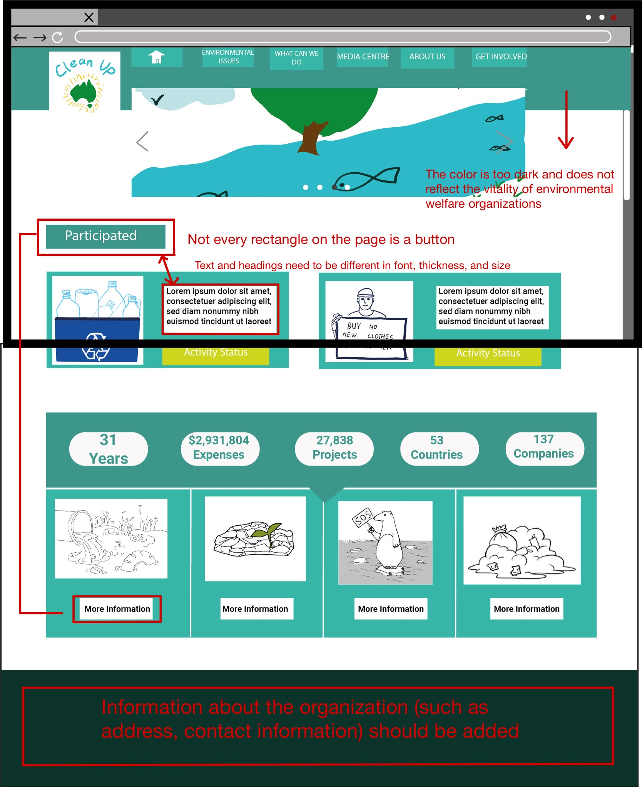 | 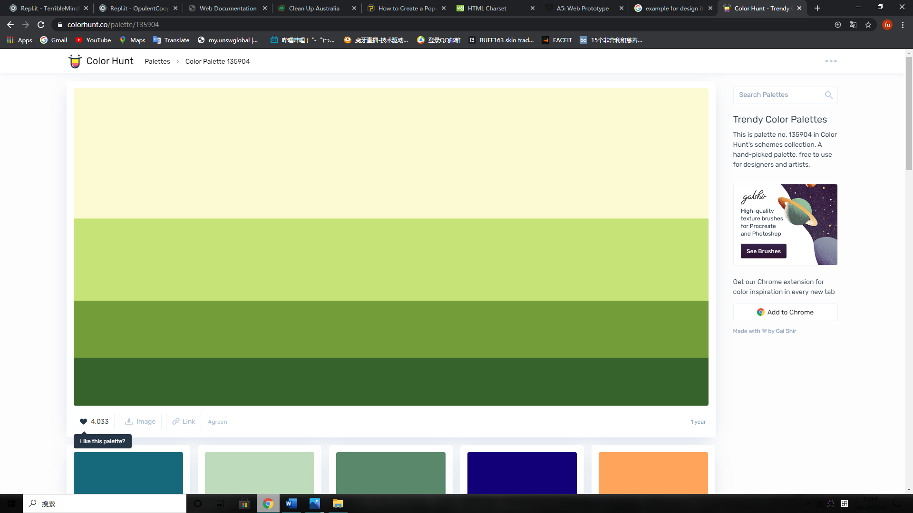 |
| 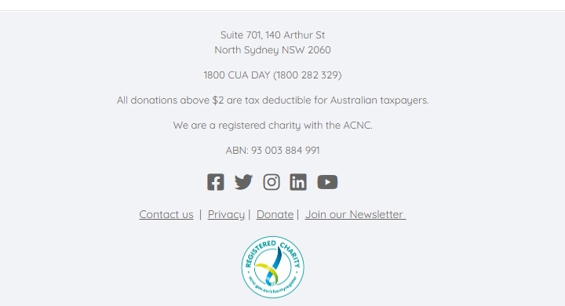 |
- The main colour is too dark and does not reflect the vitality of environmental welfare organizations.
- The display of titles and buttons/links and the use of colors all need to be reconsidered.
- Not every rectangle on the page is a button.
- In the footer, the organization's address, contact number and email address need to be added.
Donate page
| 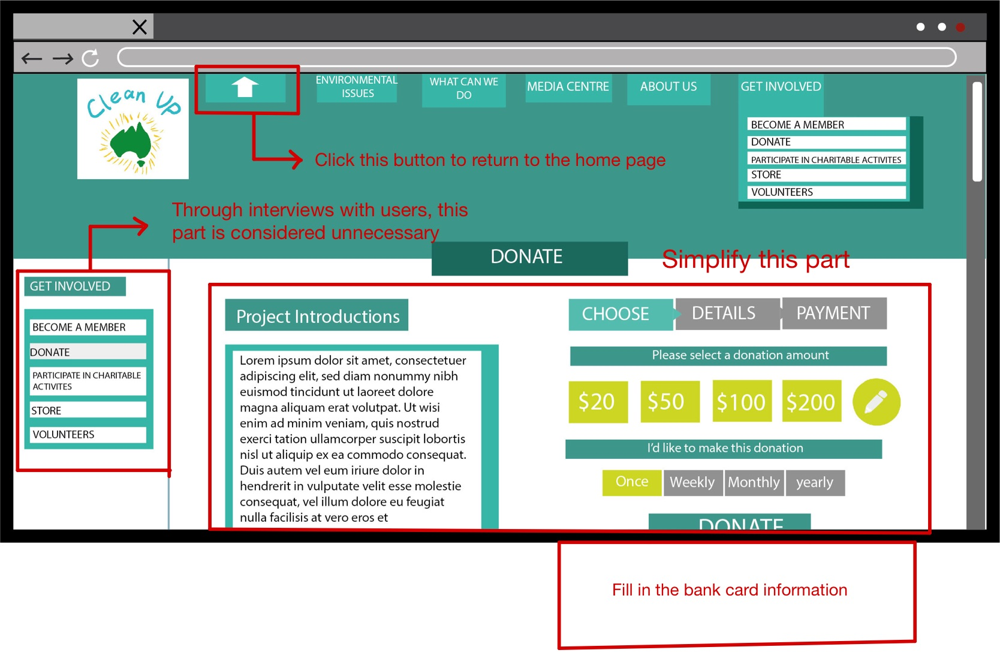 | 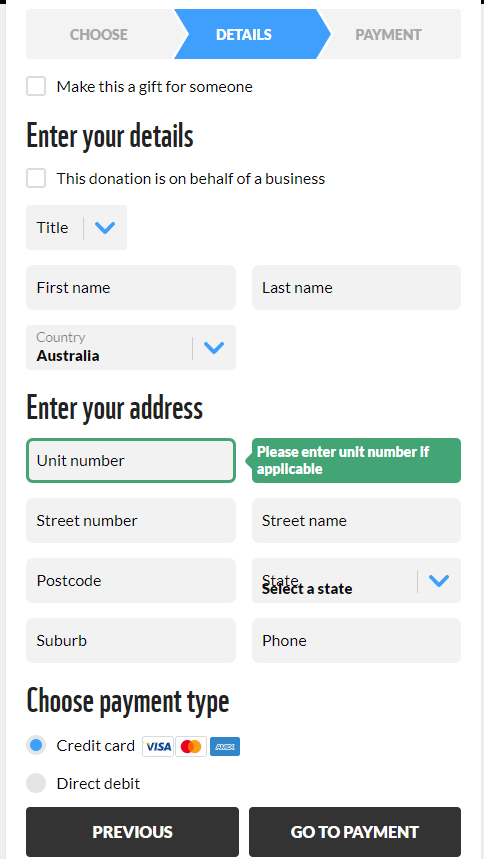 |
- Add a hyperlink to the 'home' button and Logo image. When user click on it, the page will return to homepage.
- Need to add a form to fill in bank card information.
Login page
| 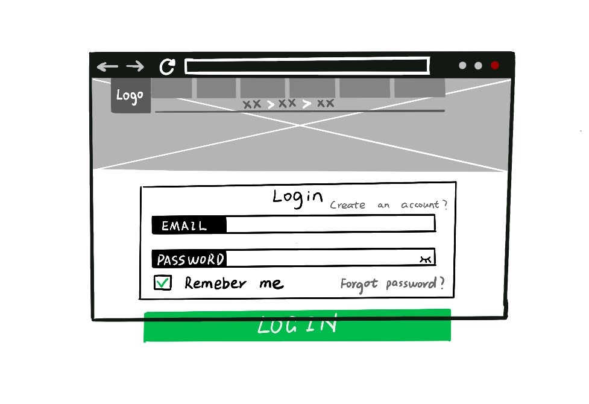 | 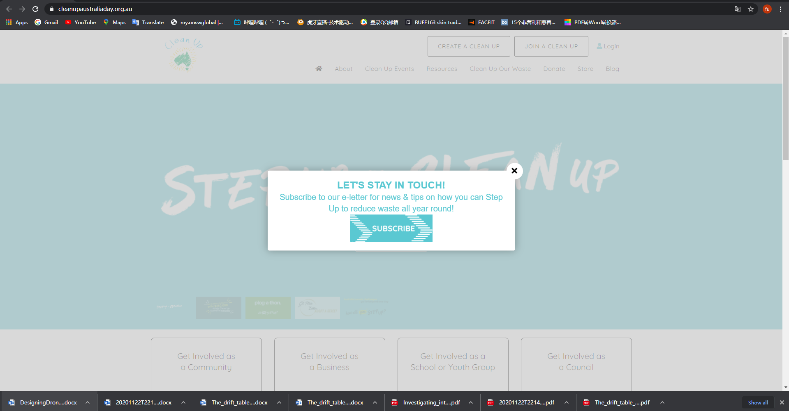 |
- A POP-UP box could be added.
Mockups
Login page
Homepage
Donation page
Web Prototype with User Feedback
Login page
Homepage
Donation page
Final Prototype
Login page
Homepage
Donation page
Click the 'Donate' button in the upper right corner of the homepage to jump to the donation page.
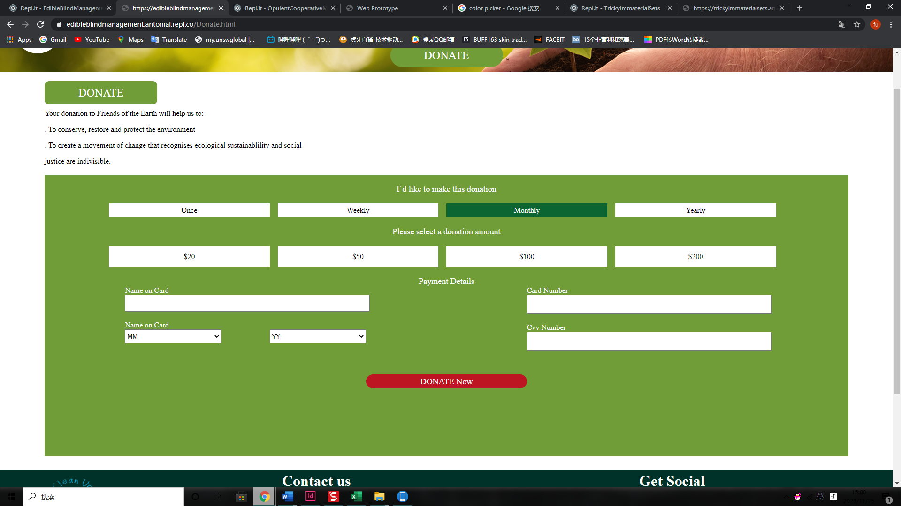 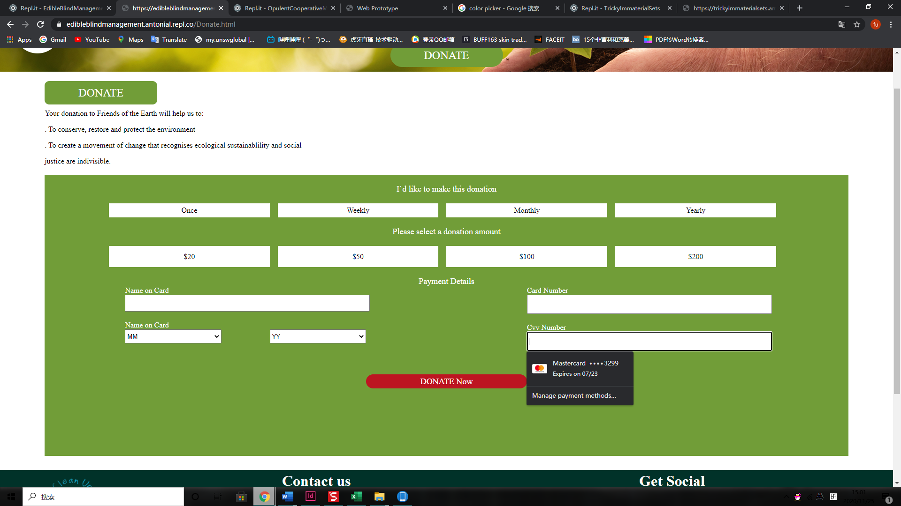 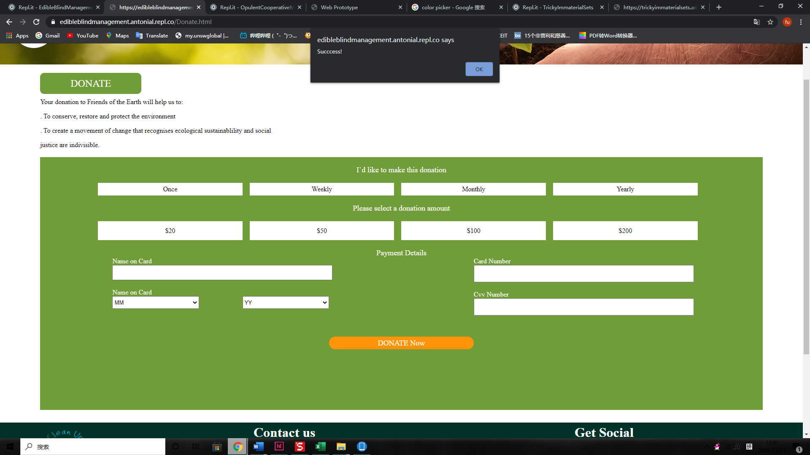 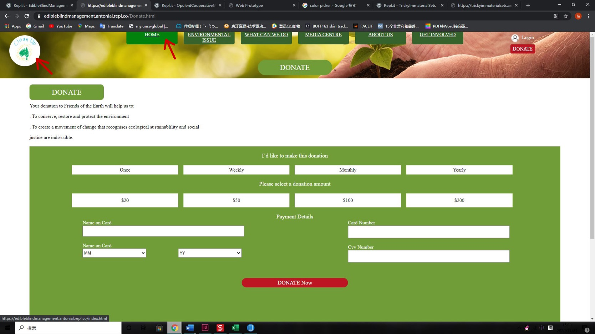Click the "home" button or logo on the page to jump to the Homepage.
Mobile website
Reference List
Charities Aid Foundation. (2018). CAF UK GIVING 2018. Retrieved from https://www.cafonline.org/docs/default-source/about-us-publications/caf-uk-giving-2018-report.pdf